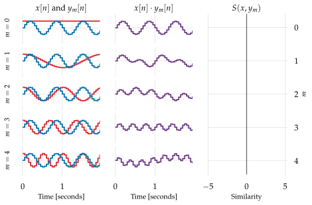

Phase
Contents
5.4. Phase#
The examples we’ve seen so far have all used cosine waves, but what if we had used a sine wave instead of a cosine for our signal \(\blue{x}\)?
Continuing the example in the previous section, we’ll use \(\red{m=3}\) to generate a sine wave at an analysis frequency with \(f_s=20\) and \(N=40\):

Fig. 5.10 A sine wave \(\blue{x[n]}\) at an analysis frequency results in similarities \(\purple{S=0}\) for all reference signals \(\red{y_m}\).#
Fig. 5.10 is not an error — all similarity scores here are 0, including the comparison to \(\red{m=3}\).
To make sense of this, we’ll first convert the \(\sin\) wave into a standard cosine form by using Equation (1.5):
Now that we have \(\blue{x}\) in cosine form, we can apply the reasoning from above to calculate each similarity score:
This looks almost identical to our first example, except that we now have phase offsets of \(-\pi/2\) in both terms of the summation. If \(\red{m \neq 3}\), this phase difference will not matter: summing over all samples \(n=0\dots N-1\) will still produce a total of \(\purple{S=0}\).
However, if \(\red{m=3}\), the first term (frequency index \(\blue{3+m}\)) will again cancel to 0 when summed, but the second term (\(\red{3-m=0}\)) will simplify to
So, rather than getting a contribution of \(\cos(0) = 1\) for each term in the summation like our first example, we instead get a contribution of 0, and the total summation results in \(\purple{S=0}\).
This is a huge problem.
Remember that our goal is to represent the frequency content of a signal \(\blue{x}\) by comparing it against a collection of reference signals of known frequencies. But what we’ve just shown is that a signal can have exactly the same frequency as one of our reference signals, and still produce a score of 0.
This example of a sine wave is in some ways the worst-case scenario. In a bit more generality, we can consider a signal \(\blue{x}\) with an analysis frequency index \(\red{m \neq 0}\) and arbitrary phase offset \(\phi\):
and by substituting \(\phi\) for \(-\pi/2\) in the above derivation, we generally have
5.4.1. Summary#
By now, we’ve seen a few interesting quirks that arise when we compare sinusoids. To quickly recap:
If \(x\) is cosine wave at an analysis frequency, it will have non-zero similarity only for reference signal of the same frequency.
If \(x\) is a cosine wave at a non-analysis frequency, it will have non-zero similarity to all reference signals.
If \(x\) is a sine wave at an analysis frequency, it will have zero similarity even if the reference signal is of the same frequency.
If \(x\) is a sinusoid of arbitrary phase at an analysis frequency, its similarity scores will generally depend on its phase.
In the next section, we’ll see how to resolve the phase issue to provide a more robust representation: the Fourier transform.